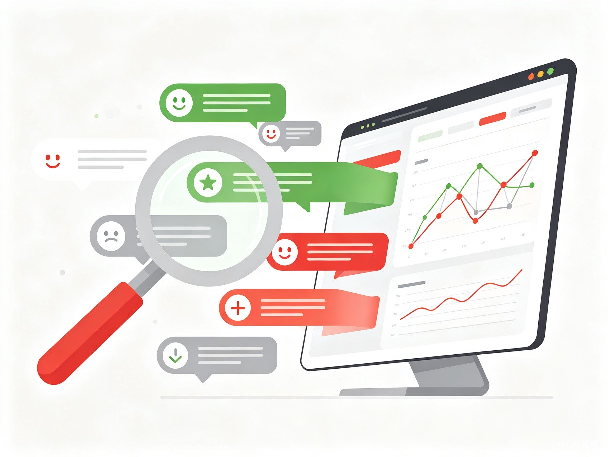

创意名称与介绍
「舆情洞察 AI」—— 一句话定义
一款开箱即用的 Web 端舆情分析 SaaS 平台，用户只需输入关键词，即可在数分钟内获得跨平台（微博、抖音、小红书等）的舆情热度趋势、网民情感分布及事件关联图谱，实现从"数据盲区"到"洞察先机"的跃迁。
想解决什么问题
当下中文互联网呈现出"信息孤岛"与"数据过载"并存的悖论：主流社交平台（微博、抖音、小红书）的数据互不相通，而每个平台每天又产生海量的碎片化评论。普通从业者面对这些庞杂的数据，难以快速提取核心观点，更无法准确、客观地判断公众对某一热点事件或产品的整体情感倾向及其随时间的演变趋势，极易陷入信息茧房或遭遇幸存者偏差。
为什么会想到做这个
专业的舆情系统往往极其昂贵且专供大型政企，而免费或轻量级的工具大多只支持单一平台，且缺乏直观的数据可视化能力（如关系图谱等）。随着大模型（LLM）能力的普及，我萌生了利用 AI 技术打造一款"平民化"、"开箱即用"的舆情分析工具的想法。目前该项目仅在 GitHub 上规划了早期空壳框架（核心功能尚未开发），希望借本次大赛的机会，利用 TRAE 强大的开发能力将其完整落地。
「让中小微团队和个人也能拥有数据天眼」—— 这是我们的核心愿景。
目标用户与痛点
面向哪些用户
新媒体运营与自媒体创作者
需要快速捕捉热点、洞察网民情绪，以精准撰写爆款文案或规避舆论雷区。
中小企业品牌公关与市场分析师
需要持续追踪产品口碑，通过可视化图谱定位负面情绪的源头与关键传播节点。
高校新闻传播与社会学研究者
需要获取真实的网络舆论数据，支撑学术论文中的情感分析与传播路径研究。
计算机与数据科学从业者
希望借助现成工具快速验证算法模型，或作为教学演示的中文 NLP 实战案例。
核心使用场景
场景一：选题跟进与热点追踪
当某个社会热点爆发时，内容创作者输入关键词，系统一键生成该话题在各平台的热度曲线和网民情绪分布，辅助其精准撰写爆款文案或规避舆论雷区。
场景二：品牌监测与口碑管理
品牌方发布新产品后，市场人员持续追踪各平台的用户反馈，通过可视化的"事件关系图谱"快速定位引发负面情绪的关键节点、痛点词汇或特定 KOL。
场景三：学术研究与社会洞察
研究者输入特定社会议题关键词，系统自动输出跨平台情感走势、高频词云与传播路径网络，为论文提供数据支撑与可视化素材。
当前痛点
如果没有这款产品，用户只能采用极为原始的人工方式：在不同 APP 间来回切换检索，复制粘贴海量评论到 Excel，甚至仅靠肉眼去主观评估网民情绪。这不仅效率极低，而且由于缺乏专业的数据处理和可视化编程能力，他们根本无法产出专业的情绪走势折线图和复杂的事件关联网络图谱，导致决策缺乏数据支撑。
效率低下
人工跨平台检索、整理数据，耗时数小时甚至数天
主观偏差
肉眼判断情绪，易受个人偏见影响，缺乏客观标准
可视化门槛
不会编程就无法生成专业的趋势图、关系网络图
价值与意义
效率提升价值
本项目将极大重构舆情分析的工作流。借助 AI 驱动的自动化处理，原本需要爬虫工程师和数据分析师协同数天才能完成的"跨平台数据清洗 → 情感分类打标 → 可视化图表渲染"繁杂工作，现在只需用户输入一个关键词，即可在几分钟内自动生成直观报告，实现工作效率的指数级跃升。

商业与社会价值
降低大数据分析门槛
打破了大型机构对舆情洞察能力的垄断。中小微团队和个人无需投入高昂成本，即可拥有专业级的数据分析能力。
更客观理智地看待网络风向
减少因情绪化跟风带来的错误决策，帮助公众建立基于数据的理性认知，缓解信息茧房效应。
助力中文互联网社会情绪研究
为新闻传播、社会学、计算机等领域的研究者提供真实、可量化的网络舆论数据与可视化工具。
推动 LLM 在中文 NLP 场景落地
验证大语言模型在中文情感分析、事件抽取、关系图谱构建等任务上的实际效果与工程化路径。
我们相信，数据洞察能力不应是巨头的特权。当每一个内容创作者、每一家中小企业、每一位研究者都能轻松读懂网络舆论的脉搏，整个社会的信息决策质量都将得到提升。
产品形态与技术亮点
产品形态
「舆情洞察 AI」定位为Web 端 SaaS 平台，采用响应式设计，同时适配桌面端与移动端浏览。用户无需安装任何软件，打开浏览器即可使用。核心模块包括：
智能关键词检索
支持多关键词组合、时间范围筛选、平台定向抓取，自动去重与噪声过滤。
LLM 情感分析引擎
基于大语言模型的细粒度情感分类（正/负/中性 + 情绪强度），支持领域自适应微调。
热度趋势与情感走势
自动生成跨平台热度折线图、情感分布堆叠面积图，支持时间轴缩放与对比。
事件关系图谱
基于实体抽取与关系识别，构建事件-人物-KOL-关键词的关联网络，支持交互式探索。
技术架构概览
flowchart TB
subgraph 数据采集层
A1[微博爬虫]
A2[抖音 API]
A3[小红书爬虫]
end
subgraph 数据处理层
B1[数据清洗与去重]
B2[LLM 情感分析]
B3[实体抽取与关系识别]
end
subgraph 可视化层
C1[热度趋势图表]
C2[情感分布图表]
C3[事件关系图谱]
end
subgraph 用户交互层
D1[Web 前端 React]
D2[关键词输入]
D3[报告导出]
end
A1 --> B1
A2 --> B1
A3 --> B1
B1 --> B2
B1 --> B3
B2 --> C1
B2 --> C2
B3 --> C3
C1 --> D1
C2 --> D1
C3 --> D1
D2 --> A1
D2 --> A2
D2 --> A3